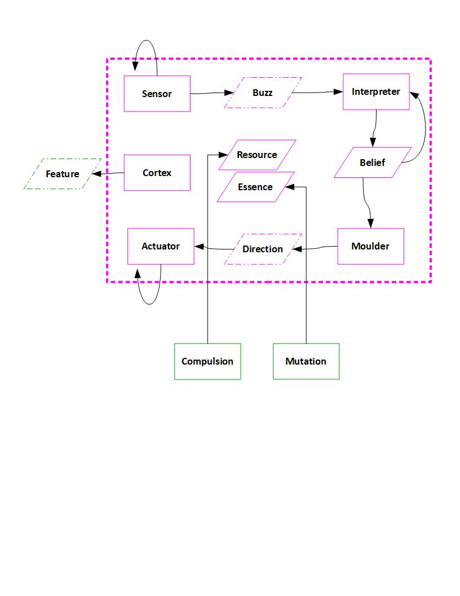

What and Why of Agent-Based Modelling¶
Purpose of Agent-Based Modelling¶
Agent-Based Modelling (ABM) is a means to investigate a system of interacting agents. Each agent can take actions. These actions are chosen independently by each agent on basis of information and resources said agent has at the moment. In particular the information can reflect outcomes of actions by other agents. Under these conditions, the system of agents evolves and macroscopic or system-wide patterns can emerge that are not simple reflections of the intentions or actions of any single agent. ABM enables the study and design of these emergent phenomena as complex functions of agent and agent interaction properties.
Fjarrsyn is a library to perform ABM. The The agent in fjarrsyn is constrained with respect to its internal structure, such that the logic connection between inputs, beliefs and actions can be clearly defined, analyzed and compared. However, the functional constraints are modest, therefore the agent in Fjarrsyn can model diverse types of agents (fish in the sea, cars on the streets, corporations in a marketplace, evolving predators and prey, warring states etc.). The definition of the agent is therefore a key feature of Fjarrsyn.
